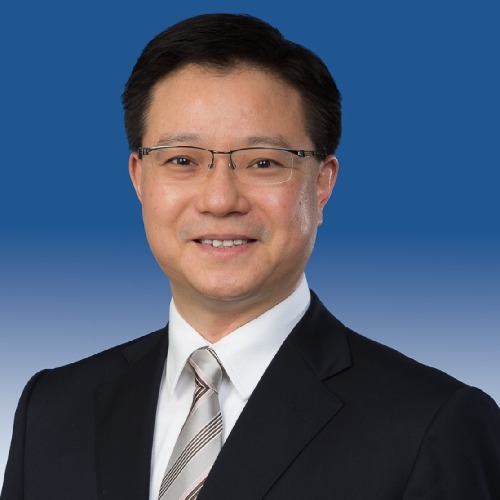
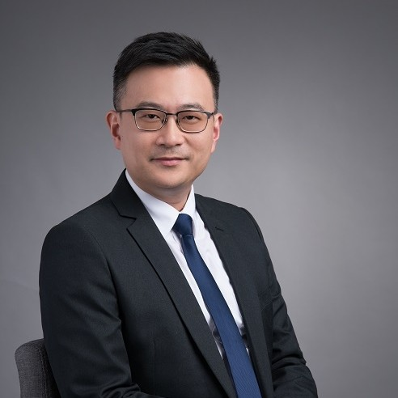
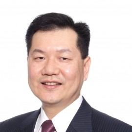
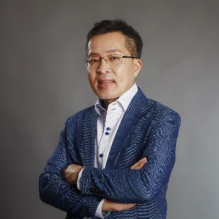
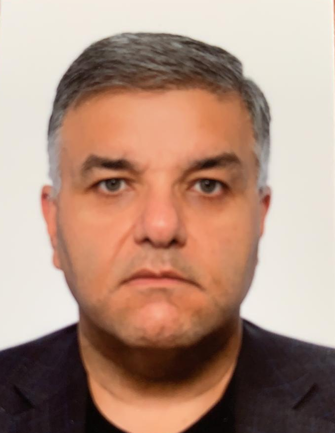
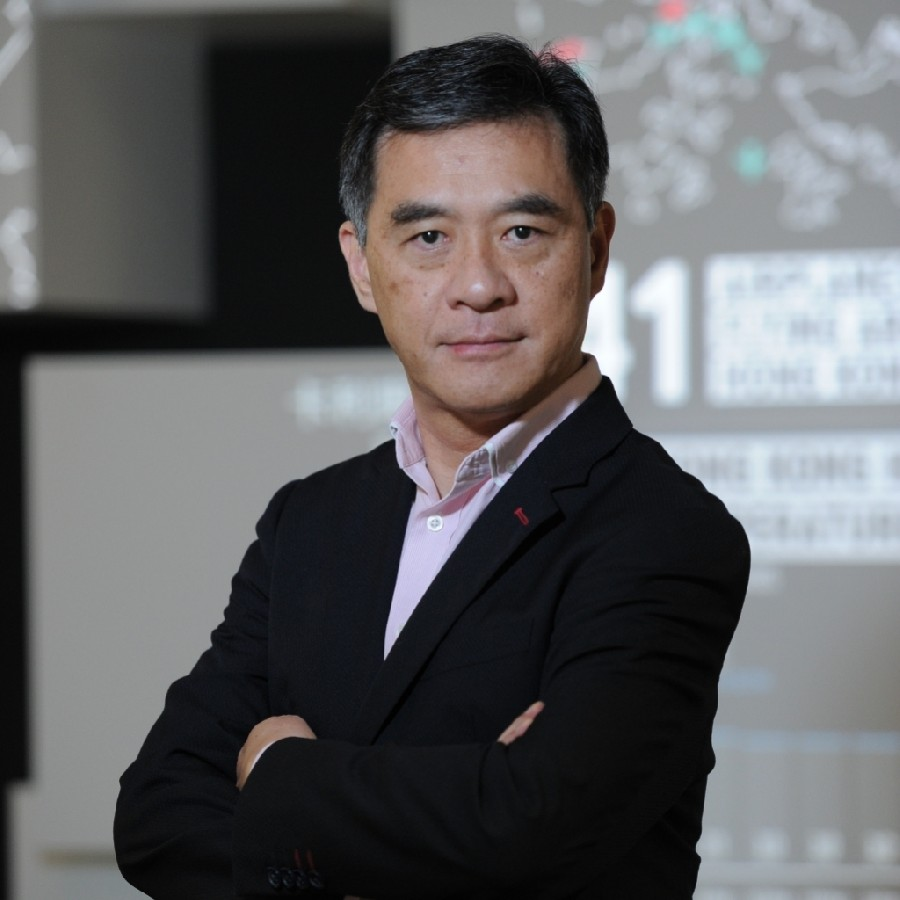

Board and Committees
Board of Directors

-
Chairman, Gordon Yen
Dr Yen is the Founding Managing Partner of Radiant Tech Ventures Ltd., a Hong Kong based investment firm licensed by the Securities and Futures Commission for Type 9 (asset management) regulated activity.
He has over 25 years of financial and management experience in private and listed companies involving cross-border investments, global supply chain, and manufacturing and infrastructure businesses. He has been involved in innovation and technology investments since the late 1990s through managing corporate and venture capital fund investments as well as investments as angel investor in transactions involving startups from the Hong Kong, Mainland China, Israel and the United States.
He is currently serving as board member of several startups in USA, Hong Kong and Israel, chairman of the Hong Kong Business Angel Network, non-executive vice-chairman of Fountain Set (Holdings) Ltd. (SEHK: 0420) and independent non-executive director of Impro Precision Industries Ltd. (SEHK: 1286).
Dr Yen has previously served as an advisory committee member of the Hong Kong Trade Development Council for Information & Communications Technology Services, an independent non-executive director of Hopewell Holdings Ltd. and Hopewell Highway Infrastructure Ltd., a founding board member of the Supply Chain Council Greater China Chapter, as well as the board and technology committee member of the Hong Kong Research Institute of Textiles and Apparel, a government funded industry-focused research institutes in Hong Kong. Dr Yen graduated from Boston University, United States with a Bachelor of Science degree in manufacturing engineering and holds a Master of Business Administration degree from McGill University, Canada and a Doctor of Business Administration degree from the Hong Kong Polytechnic University, Hong Kong.
- 
-
Vice-Chairman, Raymond Wong
Raymond Wong, Head of Investment, Hong Kong Science and Technology Park Corporate (HKSTP), manages the HKSTP Corporate Venture Fund and Investment & Business Support departments. He has over 25 years of extensive financial services experience in capital investment, portfolio management, mergers and acquisition as well as strategic investment across different sectors in the Asia Pacific region.
Prior to HKSTP, Raymond was the Principal in HPEF Capital Partners which is an ex-HSBC private equity firm. Prior to HSBC, Raymond worked in the capital investment and investment banking divisions of ABN AMRO Bank. Previously, he had software development experience at IBM Laboratory in Toronto, Canada. Raymond is a member of the Venture Committee, Hong Kong Venture Capital and Private Equity Association.
Raymond obtained a Bachelor of Applied Science in Engineering Science (Computer Aided Design and Manufacturing) from University of Toronto and a Master of Business Administration in Finance from Columbia Business School, New York.
-
Vice-Chairman, Eric Ng
Eric Ng is the Managing Director of Happiness Capital Ltd and Senior Vice President of LKK Health Products Group (LKKHPG). He created the global Venture Capital arm Happiness Capital under LKKHPG with the mission to create global impact, diversify from the core, and help the group companies and the LKK family to decode the future. Examples of the portfolio companies invested include Beyond Meat (plant-based meat alternative; US), YNSECT (insect protein; France), WeFarm (farmer’s cross-help platform and marketplace; Kenya/UK), TeakOrigin (food authenticity data science; US), GrowIn (indoor farming infrastructure; Israel), KLOOK (in-destination travel; HK), Playnovate (STEAM education; BJ China), Zebra Medical Vision (AI medical imaging; Israel/US), Insightec (MRI guided ultrasound therapy to cure Parkinson Disease; Israel/US), FLEXPORT (global logistics; US). Eric formed extremely close partnership with MIT, Harvard, and a global network of VC partners in US, Europe, Israel and China to co-create a happier world.
Eric founded AGENDA in 2000 and grew it to the largest independent digital marketing agency in Asia, and facilitated WPP’s acquisition of AGENDA in 2008 to become part of the WPP Wunderman network. WPP is one of the largest global advertising groups. Stayed with WPP after the acquisition as the Chief Client Officer (Asia Pacific) of the WPP Wunderman network.
During the 13 years in Wunderman AGENDA, Eric developed innovative digital strategies/marketing for key clients in Asia such as Johnson & Johnson, Colgate, Pepsi, Disney and Disneyland, Estee Lauder, Levi’s, MARS, Starbucks, and Walmart.
Eric founded an AI cancer diagnostic and treatment planning startup in the UK and US in 1994, which was acquired by a major healthcare organization in 1997. Joined global consulting group Cap Gemini as Director of e-Business in 1997-2000 in the US to help Fortune 500 companies to transform their brick-and-mortar business through digital innovations. Eric was an AI research scientist and university lecturer in the UK in early 90s.
- 
-
Director, Edmond Lau
Mr. Edmond Lau is the Chief Financial Officer of the Hong Kong Cyberport Management Limited. He is responsible for the Finance & Governance functions and oversees relevant financial operations and strategic development of the company.
Mr. Lau has more than 20 years of profound experience in finance, investment and business development in the technology sector, with a particular focus on fintech and digital assets in recent years. He served as the CFO of technology companies, and the Head of Investment, Head of Incubation as well as Managing Director of listed companies and venture funds. He sat on the boards of private technology companies and provided strategic advice on growth and financing. Earlier in his career, Mr. Lau worked at CLSA, Citigroup and Accenture, focusing on the telecommunications, media and technology industries.
Mr. Lau holds an MBA (distinction, Dean’s List) from London Business School, a Bachelor of Information Engineering (first class) from CUHK, and a Bachelor of Laws from China University of Political Science and Law. He is dedicated to technology development in the region and is often invited to be a guest speaker and panellist at prominent summits. He is a founding board member of CFA Shenzhen Association, Co-President of Hong Kong Internet Finance Association, board member of Hong Kong Business Angel Network, former board member of Hong Kong Society of Financial Analysts, member of Entrepreneurship Committee Advisory Group of Hong Kong Cyberport, and ESS Assessment Panel member of Innovation and Technology Commission. Mr. Lau holds the role of school manager for primary and secondary schools and an adjunct professor at the City University of Hong Kong. He is also a CFA, a FRM, and a Chevening scholar.
- 
-
Director, Marvin Lai
Mr. Marvin LAI is Managing Partner of iTM Ventures Inc, in association with Burgeon Group Consulting Ltd., Director of the Board of HKBAN, and Associate Professor in Practice at Tsinghua SEM and Adjunct Associate Professor in Finance at HKUST Business School.
Mr. Lai has over 30 years of experience in financial services (VC&PE), technologies, and consumption sectors. Mr. Lai oversees iTM-Burgeon’s principal investment and management consulting businesses. Prior to iTM-Burgeon, Mr. Lai was Chief Investment Officer of Cyberport Macro Fund where he headed the development and investments of Cyberport Macro Fund and the cultivation of its investors network. Prior thereto, Mr. Lai served as Senior Partner of ES Capital (now OES Capital) and Senior Advisor of LionRock Capital (HK). Mr. Lai began his career at IBM and AT&T Bell Laboratories.
- 
-
Director, Mingles Tsoi
Mingles Tsoi is the CXO (Chief eXploration Officer) of ParticleX, a tech-based startups investor and accelerator that aims to help technology startups tap into the Greater Bay Area through connecting the market, resources, research, and talent by making use of its comprehensive network in Hong Kong and Shenzhen. Previously, he was an entrepreneur owning his own consultancy company since 1997. Besides executive search, Mingles also specializes in fundraising and consulting for startup ventures. He was the Director of Startup & Innovation Services for KPMG China, mainly responsible for startup and innovative business consulting services for the region. He is also a pioneer in startup education, working with the CUHK Center for Entrepreneurship as Project Director for eight years. Some of his major accomplishments including the “Hong Kong Social Enterprise Challenge, the first CU Alumni Entrepreneur Census to investigate the success factors of leading entrepreneurs from local university education and the Google’s Empowering Young Entrepreneur (EYE) Program.
- 
-
Director, Prem Samtani
Prem Samtani is a “hands on” angel investor who provides both financial resources as well as active mentorship young companies across the globe. In the Asian hemisphere, Prem has partnered with a number of startups with a particular interest in the areas of food & health, education and financial technologies. Mr. Samtani holds a B.Comm from the University of British Columbia (Vancouver, Canada) and an MBA from INSEAD (Fontainebleau, France). Over the course of a his career he has senior positions at leading financial institutions including Morgan Stanley and - more recently - the Canada Pension Plan Investment Board CPPIB) where he was responsible for managing the pension fund’s public market investments in Japan.
- 
-
Director, Peter Mok
Peter Mok is the Head of GBA, Hong Kong Science & Technology Parks Corporation. He has extensive experience in sales and marketing of technology products, corporate merger and acquisition, venture capital investment and C-Level executive recruitment. Peter is one of Directors and also responsible for the secretariat office of the Hong Kong Business Angel Network. Peter holds a BA(Hons) degree from HKU, an LL.B (Hons) from the University of London and an MBA from CUHK.